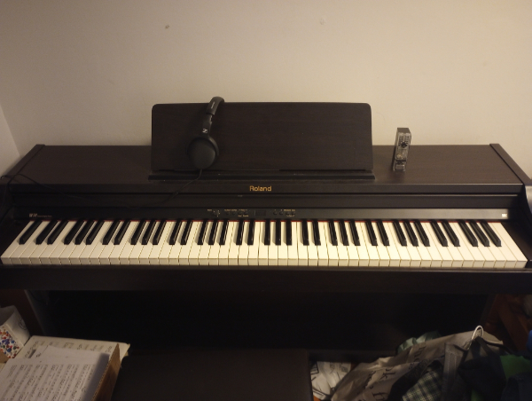
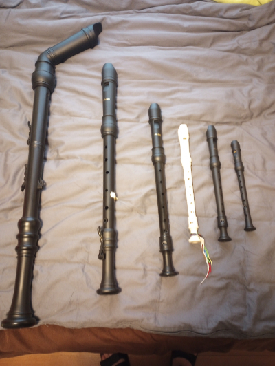

Hobby - Music! |
||||
| I studied for 4.5 years at Queen's University. During the dirst four years, I completed a B. H. Mus. with an A- GPA. My major instrument was piano. The degree is recognized as a Grade 10 Equivalency Certificate by the Royal Conservatory of Music. Higher levels of achievement are available. These higher levels are called ARCT and have a range of difficulty from Performer (lowest) to Teacher (highest). If you manage to achieve any level of ARCT, you can sign your name with it on legal documents, just like PhD. or any other title. | ||||
|  |
I have ben playing piano since January 2000, two months after I turned 7. I purchased this piano in 2012, during my music degree. It is a Roland HP702 model from 1995, and is still one of the best models for sale. The features were so advanced at the time, that it is still considered high quality now, nearly 30 years later. I get most music from MuseScore or from IMSLP. The IMSLP servers are Canada-based, so I never have to worry about copyright when downloading from it. Here is a link movement 3 of to Vivaldi's "Summer" transcribed for Piano. It is something that I am considering trying to learn over the summer. |
|||
|
Contrary to popular belief, recorders actually sound really good when they aren't played by 10-year-olds. I have seven recorders, but I only brought six with me to London. From left to right, the different sizes are bass, tenor, alto, soprano (Yamaha), soprano (Woodnote), and sopranino. For scale, the bass recorder is approximately the same size as an alto saxophone. All of the black recorders are from a company called Woodnote. The woodnote plastic recorders have a softer tone when played, so it is less harsh on the ears. This makes the sopranino bearable to play without ruining your hearing, and helps the bass maintain its solid supporting role in most music. If the piece is contrapuntal, the soft bass can be easily overshadowed by the higher pitched recorders, so other ensemble members should keep this in mind. The white recorder is a Yamaha reocrder. It is the same one that every third or fourth grade student was made to purchase back in elementary school and is still in perfect condition 20 years later. It has a very bright sound, like most Yamaha instruments, so extra care is needed to temper the tone. Yamaha recorders, in my experience, are easier to play that their Woodnote counterparts, especially in the upper register. The missing recorder is a Yamaha baroque alto recorder. Recorders come in two types: baroque and German. The differences between the two are minimal, only differing in the size of two of the holes (R1 and R2). German style recorders have a large R1 and a small R2. Baroque style recorders are the opposite. This affects fingerings for notes that would involve one or both of these holes to be covered. Baroque style is the most common in North America due to our English influence. One of my favourite chamber pieces to play is "Haircut Fugue" by James Howard Young. I played this piece with two of my friends at a recorder symposium back in 2015. Here is a link to a video of someone else playing this piece. |
 | |||
Other Instruments That I Play |
||||
Woodwind
|
Brass
|
Percussion/Keyboard
|
String
|
Voice
|
| E-mail me at matt.taylor704@yahoo.ca if you want to do music stuff! | ||||
| Back to Top | ||||